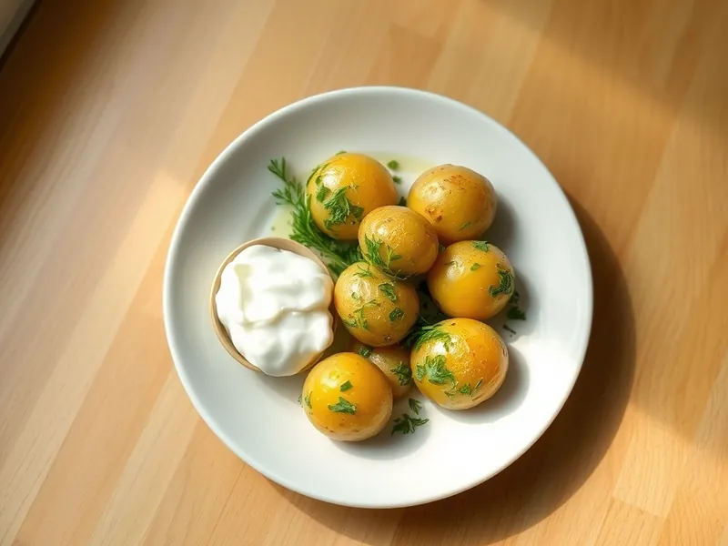

Фото: Иллюстрация ИИ, Cloudflare Workers AI
Молодой картофель с укропом и чесноком
Отварная молодая картошка в кожуре со сливочным маслом, чесноком и укропом
25 мин3 порц.338 ккал на порциюБ 6 · Ж 12 · У 50Русская кухня
Продукты на 3 порц.
- Картофель9 шт
- Сливочное масло40 г
- Чеснок2 зуб.
- Укроп1 пучок
- Соль2 ч. л.
- Вода2000 мл
- Сметана 20% по желаниюпо вкусу
Как готовить
- Вымойте мелкий молодой картофель щёткой, кожуру не снимайте. Крупные клубни разрежьте пополам.
- Опустите картофель в кипящую воду, посолите и варите на среднем огне 15-18 минут, пока нож не будет входить легко.
- Пока варится картофель, мелко нарежьте укроп и пропустите чеснок через пресс.
- Слейте воду и подержите кастрюлю на слабом огне 1 минуту, чтобы выпарилась влага.
- Добавьте сливочное масло, чеснок и укроп, посолите по вкусу, закройте крышкой и несколько раз встряхните кастрюлю, чтобы масло покрыло каждую картофелину.
- Подавайте сразу, со сметаной по желанию.
Совет. Молодой картофель кидайте только в кипящую воду: так он не разварится и сохранит сладковатый вкус.